2019.
12.01. 16:25
Nos... múlt héten azt mondtam, hogy hétköznap folytatom az időjárásos appot. Sajna hétköznap megint nem értem
rá / nem volt energiám hozzá, viszont tegnap sikerült befejeznem (ami valójában ma hajnali 5 volt csak azóta
aludtam egy keveset). A design-al nem volt kedvem szórakozni, úgyhogy egy youtube-os tutorialból nyúltam
egyet mert az tetszett. Ez alól az ikonok kivételt képeznek, mert azok az OpenWeather saját ikonjai (innen
van az API). A tutorialban a srác koordináták alapján kérte az adatokat, én viszont városra szerettem volna
keresni. Végül úgy döntöttem, hogy először behozza a jelenlegi koordináták alapján az időjárást, és aztán ha
gondolod kereshetsz máshova is. Ezzel az volt a baj, hogy az én domain-em nem biztonságos és így nem tudom
lekérni a pozíciót (localhoston működik csak). Próbáltam upgradelni a domaint, hogy biztonságos legyen, de
valami varázslatos okból kifolyólag ez nem jött össze. Alternatív megoldásként feltettem az appot GitHub-ra
és a GutHub Pages segítségével lett hostolva. Ezt linkeltem be a Teszt Laborba. A GitHub Pages ugyanis
biztonságos, https protocolt használ.
Egészen bejött ez a kis app,
később lehet hogy bővítem összetettebb funkciókkal, szerintem jó kis portfolio project lenne belőle. Úgy
emlékszem, hogy 1-2 hetes előrejelzést még le tudok kérni ingyen. Jó lenne, ha be tudnád állítani, hogy
milyen adatokra van szükséged és csak azokat hozná be, melyik napra kéred az előrejelzést, stb... Jelenleg
másra fókuszálok, de később lehet, hogy visszatérek még ehhez. Sokkal szívesebben csinálnám ezt, mint valami
számológépet, Tetris játékot vagy Kő Papír Ollót. :D
11.25. 00:29
Végeztem a Media Player-es résszel... Nos sokkal jobbat vártam. Valójában csak egy olyan könyvtárról szólt
ami ugyanolyan külsőt ad az aduio és video elementeknek minden böngészőben, valamint testreszabhatóvá teszi
azokat. Később talán csinálok valami egyedi lejátszót valamihez, de most semmi kedvem nem volt ilyen
aprósággal szórakozni, úgyhogy ehhez most nem csinálok semmit.
Szóval mentem tovább és végeztem az AJAX-es kurzussal. Ehhez most akartam volna gyakorlásnak egy kis oldalt
összedobni ami a jelenlegi időjárást mutatja egy adott helyen, de várnom kell az API kulcsra így ez holnapra
marad. Addig is belekezdtem a kövi kurzusba: Object-Oriented JavaScript.
11.22. 18:43
Treehouse-on volt egy kis ismétlés audio és video témában. Mikor először néztem ezt a kurzust nem tettem fel
semmit sem, de gondoltam most már mégis jó lenne. Szóval van egy egyszerű kis videó plusz csinálni kellett
hozzá feliratot és ezt a kis Treehouse-os projektet tettem fel. Azért ezt és nem sajátot, mert ha egy
youtube videót akarnék felrakni, azt tudnám iframe-el úgy ahogy youtubeon látod megosztás gombbal
meg mindennel. Saját videót pedig nem akartam megint feltölteni, mint a videó hátteres projektnél.
11.17. 17:32
Éjjel nem tudtam aludni, szóval egy videó alapján összedobtam egy Text to Speech appot. Link a szokásos
helyen. Adtam hozzá pár gombot, hogy le lehessen állítani meg folytatni stb... A Windows-os hangokat
használja szóval máson nem nagyon fog működni. Ebből kifolyólag szerintem nem is nagyon fogok azzal
foglalkozni, hogy túl jól nézzen ki telefonon. Marad ilyen kis egyszerű, úgyis csak unaloműzésből
kísérleteztem vele.
11.17. 00:39
A héten sajnos eléggé lefárasztott a munka úgyhogy hétvégére maradt minden kódolás. Természetesen az volt a
mai napra kitűzött cél, hogy a legutóbb elbénázott optimizásást kijavítsam. Múltkor még egy csomó mindent
manuálisan kellett átméreteznem és egyszerűsítenem, már akkor tudtam, hogy többet ezt nem fogom
végigcsinálni ennyi fájllal. Szóval az egész napom arra ment el, hogy Gulp-ot tanuljak. Ez egy task-manager
ami automatizál egy csomó kellemetlen és időigényes folyamatot. Én pl arra használom, hogy Javascriptet és
CSS-t minifikáljon, plusz képeket optimalizáljon, de még nagyon sokmindnere használható. Azért tartott ilyen
sokáig megérteni a használatát, mert nemrég jött ki egy új verziója és sok tutorial még a régi nyelvet
használta. Észrevettem pár olyan változtatást is amit korábban a Treehouse-os oktatóvideó javasolt, de
valójában csak rontott a teljesítményen, úgyhogy ezeket orvosoltam.
A végleges számok javítás után:
Nyitólap:
- 9 requests
- 107 KB transferred
- Load Time: 767.8 ms (5 mérés átlaga)
Blog 2019:
- 19 requests
- 145 KB transferred
- Load Time: 1.10 s (5 mérés átlaga)
11.17. 00:22
A múlt heti első próbálkozás eredménye:
Nyitólap:
- 9 requests
- 118 KB transferred
- Load Time: 951.4 ms (5 mérés átlaga)
Blog 2019:
- 19 requests
- 187 KB transferred
- Load Time: 1.37 s (5 mérés átlaga)
11.11. 23:27
Tegnap egész éjjel a teljesítmény optimalizáláson dolgoztam. A Blogon sikerült is javítani, de a Nyitólap
rosszabb lett. Most már nincs időm megint szórakozni vele úgyhogy talán majd holnap vagy amikor legközelebb
ráérek kijavítom a hibákat.
11.10. 23:52
A héten végigpörgettem a Front End Teljesítmény Optimalizálás kurzust is. Az előzőhöz hasonlóan ez is egy
egészen egyszerű rész volt. Most ideje hasznosítani a tanultakat és optimalizálni a weboldalam ugyanis eddig
egyáltalán nem foglalkoztam ilyesmivel. A Teszt Laboros projektekhez egyelőre nem nyúlok, a Nyitólapot és a
két Blogos oldalt viszont kipofozom.
A jelenlegi helyzet:
Nyitólap:
- 13 requests
- 103 KB transferred
- Load Time: 826.6 ms (5 mérés átlaga)
Blog 2019:
- 22 requests
- 2.1 MB transferred
- Load Time: 4.74 s (5 mérés átlaga)
Szóval ezen próbálok meg javítani és majd postolom az eredményt. Azért csak a 2019-es blogot raktam ide,
mert az a nagyobb. Még nem ölel át egy teljes évet, de majdnem megvan. A 2018-as csak 2 hónapot tartalmaz.
Kevesebb a kép is, annak a lapnak a load time-ja 3 másodperc körül ingadozik. Eddig azért nem zavart a
2019-es blog csaknem 5 másodperces load time-ja, mert először úgyis csak a lap teteje látszik. Még ha ott is
vannak a képek nem tartott túl sokáig betölteni azt a 6 darabot, a lenti tartalom meg már rég ott volt mire
legörgettem.
Még egy apróság: Megint böngészőt váltottam, ezúttal a Chrome-ra esett a választás. A webfejlesztős része
kicsit átláthatóbb és amúgy is ezt használják a legtöbben. A Firefoxot is megtartottam hátha azon is meg
kell nézni valamit.
11.05. 14:08
Ahogy ígértem itt egy kis beszámoló az új design-ról:
Ez a weboldal design-jának a negyedik verziója egy éven belül. Az elején ugye azzal a nagyon csúnya Matrixos
témával indultam, aztán annak lett egy jobb változata aminél a nyitólapon az animált kódeső volt. Ez már
sokkal érdekesebb volt az animáció miatt, de összességében még mindig ronda volt az egész. Ezután jött a
mobile first megközelítés (az előző design). Ez telefonon egész jól nézett ki, sajnos nem változtattam rajta
eleget nagy képernyőkhöz így gépen már elég furán mutatott.
Az új design tervei amiket Adobe XD-vel készítettem:
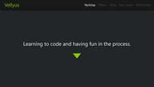
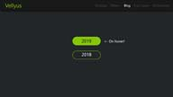
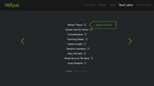
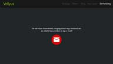
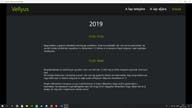
Újra visszatért a fent rögzített navigáció, kisebb kijelzőkön pedig egy hamburger menü látja el a feladatot.
A háttér sötétebb lett, de a betűszín nagyjából maradt a régi. A betűtípust viszont megváltoztattam, az
előző a Matrixos témához kellett és kissé nehezen olvasható volt. A blog kivételével minden korábbi lap egy
oldalon lett összevonva, így csak egyszer kell betölteni.
Nos akkor mit is sikerült megvalósítani ezekből a tervekből és miben tértem el?
- A menüpontokat közelebb hoztam az ablak szélétől, hogy szintben legyen a tartalommal, de a menüsáv maradt
ugyanolyan széles. A Nyitólapon a zöld háromszögre sajnos nem sikerült árnyékot tenni, minden más kiemelt
szöveg kapott árnyékot. Még nem tudom hogy kell megoldani, hogy ne a kép kerete, hanem a benne lévő
háromszög kapja az árnyékot.
- A Rólam szekció szövege egyelőre a régi blog bevezető, ezt majd valamikor
átírom. A Teszt Laboron kívül igazából minden szekció egész egyszerű, szóval amint az első kész volt a többi
már gyorsan ment.
- A Teszt Labortól viszont tartottam az elejétől fogva, mert pár új dolgot odazsúfoltam.
Először is ilyen lapozható kis listát akartam. Ez szerencsére viszonylag simán sikerült is, de a lista
navigációjának a színét már nem tudtam megváltoztatni. Nem is olyan nagy baj, jól néz ki az alappal is.
Viszont terveztem még ilyen kis infó ikonokat amik egy rövid leírást tartalmaztak volna az egyes
alkotásokról. Ezek az ikonokra kattintva ugrottak volna fel. Gépen még talán oké is lett volna, de
telefonon annyira kevés volt a hely, hogy el kellett vetnem az ötletet. Telefonon a lapozós navigáció
eltűnik és csak egy lista marad a linkekkel.
- A blogon sokat nem változtattam a tervhez képest, csak odaírtam
a Vellyus mellé, hogy weBlog. Így egyértelmű hogy hol is vagy éppen. :)
- Azt tudtam, hogy Bootstrap-et akarok használni az oldal felépítésében, mert nemrég fejeztem be a kurzust
és
jobban megmaradnak a tanultak ha használom is valamihez.
Az alap Bootstrap-es hamburger menü nem tűnt el ha ráböktél benne egy linkre, ezt külön sikerült megoldanom.
Plusz hozzáadtam az oldalhoz egy smooth scrolling effectet. Ezen még lehet, hogy csiszolok, egyelőre csak a
linkekre kattintva görget el szép simán a célhoz. Ezzel az volt a gubanc, hogy a Teszt Labor lapozós
listájára is mindig odébb görgetett, de ezt sikerült kiküszöbölnöm. További gondot okozott, hogy a
Bootstrap-es CDN a jQuery slim verzióját linkeli be, de az nem tartalmazza a görgetős animációt, így erre is
rá kellett jönni és kicserélni a minified verzióra.
- Egy-két szekció betűmérete telefonon kicsit nagyra sikeredett, ezen még finomítok, plusz megpróbálom
megoldani, hogy a hamburger menü akkor is összecsukódjon ha azon kívül böksz valahova.
Összességében elégedett vagyok az eredménnyel, szerintem szép és letisztult kis oldalt sikerült összedobni.
Nagyon sokat fejlődtem az elmúlt egy évben, az első próbálkozáshoz képest ez óriási előrelépés.
11.04. 15:02
Elkészült az új design! Egyelőre tesztelgetem aztán majd holnap írok róla egy terjedelmesebb postot. Lesznek
képek a tervekről, leírom mit sikerült megvalósítani és mit nem, szóval részletesen beszámolok mindenről. Ha
valami még mindig a régi módon jelenne meg a nyitólapon vagy a blogban akkor nyomj egy frissítést!
11.02. 20:17
Elkezdtem használni az Adobe XD-t, ami lényegében egy webdesign-t segítő szoftver. Hamar belejöttem, könnyen
kezelhető, tegnap be is fejeztem az új design felvázolását. Ma fogtam hozzá a kódoláshoz, eddig egész jól
megy.
Nagyjából sikerült tartani a design tervet, bár volt hogy közben rájöttem hogy jobb ha más színt használok
és egy
képre nem sikerült árnyékot tenni. Nem akarok képeket mutogatni róla, ha minden jól megy hamarosan úgyis
felteszem
ide. Ezután valószínűleg megint le kell cserélnem az ikont, szóval sok értelme nem volt annak, hogy a
múltkor újat
csináltam. :D
10.30. 17:25
Megcsináltam a gyakorló feladatot amit tegnap említettem. Kissé bonyolultabb volt, mint amire számítottam, de
sikerült minden problémát megoldani. Az elkövetkező 1-2 hétben az új designon fogok dolgozni, majd meglátjuk
meddig tart...
10.29. 18:46
Megváltoztattam az oldal ikonját, igazából csak a szín lett más. A zöld még az előző designhoz passzolt, most
ilyen:
Ma kishíján befejeztem a Bootstrap kurzust, már csak egy gyakorló feladat van hátra belőle. Vagy megcsinálom
azt,
vagy előbb ezen az oldalon dolgozok és majd azután befejezem. Még nem döntöttem el. :D
Megint változtatok a designon, az újat majd Bootstrap-el fogom elkészíteni, hogy ezzel is gyakoroljam a
használatát. Természetesen majd alakítgatok rajta CSS-el egy kicsit. Nagyjából felvázoltam, hogy milyen lesz
az új
design, de még nincs megtervezve minden eleme.
Addig is pár screenshot a mostani állapotról:
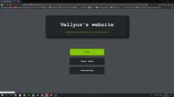
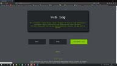
 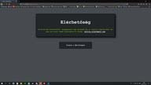
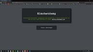
10.26. 14:12
Éjjel munkahelyen volt egy kis időm és összedobtam jegyzettömbben egy kis programot ami számokat konvertál
római
számokká. Talán majd egyszer ennek is megcsinálom a fordítottját, de most tuti nem állok neki. :D A link,
mint
mindig a Teszt Laborban.
10.23. 23:24
Sajna megbetegedtem, úgyhogy mostanában nem csináltam sokmindent a pihenésen kívül. Ma kódoltam először az
előző
post óta. Találtam egy jópofa animált fejet aminek a szemei követik az egeret. Nem saját kreálmány, de
annyit
azért megpróbáltam hozzátenni, hogy telefonon is rendesen működjön. Ez sajna nem sikerült, pedig vesződtem
vele
1-2 órát. Talán majd egyszer meglesz a megoldás. Addig is telefonon csak tap-elni kell egyet és odaugrik a
szem,
gépen meg megy rendesen.
Egy kicsit szórakoztam a VS Code-al is, pár beállítás nem tetszett és most volt kedvem játszani velük. Még
valamennyit tanulok aztán sztem mára ennyi kódolás elég is.
10.17. 16:11
Bootstrap-et tanulgatok. Egész jól haladok vele, jól esik végre valami egyszerűbbel is foglalkozni kicsit.
Viszont most, hogy ilyesmikkel vagyok elfoglalva és ide nem jut semmi content gondoltam felrakom a
szeptember
30.-án említett p5-os alkotásokat. Egyelőre csak felraktam a többi link közé, később majd talán elkülönítem
ezeket, de most még nincs olyan sok.
-> Spots - p5
-> Drawing App - p5
-> Bouncing Ball - p5
A Drawing App-ról annyit, hogy lassan kell húzni az egeret ahhoz, hogy a kis körök vonalat alkossanak és
akkor
rendesen tudsz vele rajzolni. Üres laphoz frissíts!
Telefonon valószínűleg túl kicsi lesz az összes, de ha elfordítod a telót, akkor már egész jó. A teljes
képernyős
mód sajnos nem fért ki telefonokon.
10.15. 16:35
Tegnap végre befejeztem a jQuery-s kurzust. Voltak ötleteim, hogy mit csináljak vele gyakorlásképp, de
mindegyiket elvetettem:
- Rakéta csapat mottója a Pokemonból animációkkal, de rájöttem hogy nem tudok olyan jó animációkat csinálni
amik
tetszenének is.
- Lenyitható Info gombok a Teszt Labor linkjaihez, hogy legyen mindegyikről valami kis leírás. Jelenleg csak
a
blogban van róluk infó, onnan meg nehéz kikeresni bármit is, de elég sok magától értetődő és ha valaki
kíváncsi a
sztorira akkor úgyis elolvassa a blogot. Majd lehet, hogy később ezt megvalósítom ha több tartalom lesz.
- Sima görgetős effect a Blog linkjeihez. Jelenleg ugye csak úgy odaugrik a kívánt pontra, ezzel meg szép
lassan
odagördülne. Kipróbáltam és gépen még egész jó, de telefonon a szűk kijelző miatt olyan sokat kell görgetni,
hogy
még 5 másodpercesre állítva is úgy zúdul le (vagy fel) a szöveg mint egy vízesés. Szóval ezt az ötletet is
elteszem majd egy későbbi projecthez.
Egy ideje nem alkottam már semmi jót és ennek az az oka, hogy most inkább a tananyaggal szeretnék haladni
(már ha
van kedvem hozzá) és majd utána építgetnék ezt-azt. Jó lenne valami csoda folytán még idén a végére érni a
Front-Endes tananyagnak. Majd utána vagy amikor közben kedvem lesz csinálgatok ezt-azt vagy javítgatok régi
alktásokon. Például a bináris átváltók még mindig nem lettek összevona. Egy-két kurzus múlva építeni kell
egy
zenejátszót, amit már régóta akarok szóval ha gyorsan eljutnék addig akkor kerülne is fel valami értelmes
ide. :)
10.01. 17:02
Egy keveset sikerült tanulni, túl sokra sajna nem voltam képes. Talán holnap a végére érek a jQuery-s
résznek.
Most nincs sok kedvem új dolgokat építgetni, inkább a tananyaggal haladok és majd aztán sort kerítek pár app
vagy
weboldal elkészítésére.
09.30. 18:21
Nos, mint az a dátumból kiderül ismét volt egy "kis" szünet. Igazából mással is elmaradtam, nem csak kódolni
nem
volt kedvem, de azt hiszem ideje végre megint haladni. Nem hiszem, hogy ma bármit is sikerül csinálni, mert
a
kevés alvás meg a meló miatt kissé fáradt vagyok de gondoltam akkor már összefoglalom amit eddig nem írtam
le és
majd holnap belevetem magama tanulásba.
Egy keveset haladtam a jQuery kurzussal és végre tudtam valamire
hasznosítani a tudásom. Munkahelyen egy ideje használunk egy webes felületet amin néha kicsit sokat kell
teljesen
feleslegesen kattolgatni meg görgetni. Mióta ezt használjuk akartam egy scriptet ami rögtön kitölt nekem
mindent,
hogy időt spóroljak, de nem sikerült megoldást találni... Mostanáig! Három hete volt egy kis időm
újra belenézegetni
ennek a felületnek a kódjába és ez is jQuery-t használ. Újonnan szerzett hatalmammal egyszerűen
kiválasztottam az
összes gombot és ráklikkeltem egy rövidke parancssorral ami most akár napi 15-20 percet is spórolhat nekem.
:)
Két gombnyomás hosszas görgetések meg kattolások helyett, már csak ezért megérte eddig tanulni.
Ezenkívül: A The Coding
Train nevű YouTube
csatornán van egy lista ami p5 könyvtárhoz tartalmaz oktató
videókat. Lényegében
ezzel tanít programozni és csináltam pár apróságot a videók keretében amit esetleg érdemes lenne feltenni
ide
valamilyen formában. Majd még kiötlöm hogy legyen...
09.04. 23:25
There are only 10 types of people in the world: Those who understand binary and those who don't.
09.01. 19:12
Elkészült a Binary to Text Translator is, a másik alá tettem a linket. Plusz mindkettőhöz hozzáadtam pár
írásjelet. Egyelőre így hagyom őket, aztán majd valamikor ki lesznek szépítve.
08.28. 18:14
Végeztem a " Javascript and the DOM" kurzussal, a gyakorlós részét pedig feltettem a Teszt Laborba -> DOM
Practice. A gombok amik a lista elemeit kezelik kissé lassan töltődnek be, mert azok is JavaScripttel lettek
létrehozva. A kurzus végén volt egy kis challenge, meg kellett oldani, hogy az első elemen ne legyen Up
gomb, az
utolsón meg ne legyen Down. Ez kicsit, necces volt, mert ahogy mozgatod az elemet mindig frissíteni kell,
hogy
milyen gombok kellenek hozzá, de végül sikerült.
08.21. 10:00
Hétvégén egy havernak próbáltam magyarázni egy keveset HTML-ről, CSS-ről meg JavaScript-ről és tegnap neki
akartam állni pár dolognak, amit már terveztem egy ideje. Szóval megkérdeztem havert, hogy nincs-e kedve
együtt
csinálni és meglepő módon sokkal többet sikerült megcsinálni, mint amennyit általában egyedül szoktam.
Ezeket csináltuk meg tegnap:
Decimal to Binary Converter: értelemszerűen egy 10-es számrendszerbeli számot vált át 2-esre.
Binary to Decimal Converter: ugyanaz csak fordítva :)
Ez a kettő később majd egybe lesz vonva és egy gombbal meg tudod fordítani. Mint ahogy a Google fordító is
működik.
Text to Binary Translator: Ez szöveget fordít bináris kódra. Minden karakternek megvan a 8 bites
megfelelője
(külön a kis és nagy betűknek), a szavakat ebben az esetben alulvonással választottam el, a mondat végi
írásjelek
pedig maradtak. Később még adok hozzá írásjeleket pl: vessző, kettőspont, stb... Egyelőre visszafelé nem tud
dekódolni, de később megcsinálom azt a részét is és ez is Google fordítós formátumban lesz. Tehát 2 szöveges
mező
egymás mellett és az egyikből fordít a másikba. Ja, még valami... egyelőre csak az angol ABC betűit ismeri,
tehát
ékezetes betűkkel ne próbálkozz!
08.14. 20:07
Új kurzus: Javascript and the DOM, ezzel kapcsolatban tettem fel egy kis apróságot a Teszt Laborba. Ezt
használták a videóban példának és megtetszett. Csak pár színt módosítottam rajta, mert kicsit elüt a fehér
háttér
+
fekete szöveg attól amit eddig csináltam. :)
Tehát... Color Change linken megtalálod és úgy működik, hogy a szövegdobozba beírsz egy színt (angolul) és
megnyomod a gombot. Hex kódot is elfogad és itt egy link a beépített színekhez amik szavakként kiírva is
működnek:
HTML Color Names
08.13. 16:34
Sajna meló miatt nem tudtam túl sokat tanulni, de azért egy keveset haladtam. (egy napos hétvégém volt ^^)
Feltettem a challenge-t amit a object-es kurzus keretében csináltam.
Student Report nevű link a Teszt Laborban.
Egy kis infó erről a reportról:
Van egy array object-ekkel, minden egyes tanuló egy object. A 'list' paranccsal meg tudod nézni az összes
tanulót
és láthatod, hogy két Sarah nevű diák van. Ez azért fontos, mert extra feladat volt megoldani, hogy a script
az
azonos nevű tanulókat is kilistázza és ne csak az első találatot. Szóval ezt úgy sikerült megoldanom, hogy
ha a
keresett szóval egyezik egy diák neve akkor az indexét (ez jelöli, hogy hányadik elem az array-ben) átteszem
egy
másik array-be. Azokat az object-eket dobjuk ki találatként amiknek az indexe egyezik az új array-ben
lévőkkel.
Lehet, hogy ez kicsit nehezen értelmezhető leírás volt, de nem tudom ennél jobban elmagyarázni írásban. :D
Esetleg nézd meg a forrást, hátha a kód olvashatóbb :P
08.08. 02:32
Nos, ahogy hazaértem elkezdtem az object-es challengeken dolgozni egy Monster segítségével. Sikerült is
mindet
befejezni, de egyelőre ide még nem raktam fel semmi ehhez kapcsolódót. Nem hiszem, hogy csinálok bármi
sajátot,
majd csak felrakom az egyik challenget. Egy zenejátszót akartam, de 1-2 kurzussal később úgyis készítenem
kell
egyet, úgyhogy majd megcsinálom akkor.
08.07. 13:21
Ugyanaz történt, mint tegnap. Lehet, hogy ma inkább megpróbálok este kódolni, de valószínűleg nem fog menni
fáradtan.
08.06. 11:07
Hát ma véletlenül sikerült átaludnom a kódolásra szánt időt, így minden amit elterveztem holnapra marad.
Amúgy se
fogok túl sokat haladni ezen a héten, mert 6 napot kell dolgozni :/
08.05. 09:54
Oké, szóval: sikerült mobilbarátabbá tenni a legtöbb Teszt Laboros lapot. A Memento Mori maradt olyan
amilyen,
majd talán egyszer találok rá megoldást. A Petals around the Rose is hasonló cipőben jár, de az egyszerűbb
ezért
sokkal elviselhetőbben néz ki. A challenge még nincs kész, de alakul. Sajna ma csak 2 órám volt a gépnél,
úgyhogy
ezt majd holnap folytatom.
08.04. 20:43
Ma egyszerűen semmi se jött össze. A Memento Mori-val semmit sem haladtam, mert akármit változtatok a CSS-ben
az
telefonon nem jelenik meg. Hiába clearelem a cash-t hiába próbálom másik böngészőben meg inkognitó módban
megnyitni. -.-
A challenge-t sem sikerült megcsinálnom, úgyhogy mára feladom. Majd talán holnap jobban megy...
08.03. 21:47
A Search és Riddles már jó mobilra, a Memento Mori még nem az igazi, de holnap befejezem. Plusz holnapra
marad a
challenge is. Ma meglestem egy másik kurzust, kicsit sok idő elment vele de informatív volt.
08.02. 23:27
Tegnap vettem észre, hogy a Memento Mori app-ban volt egy hiba. A getDay method-ot használtam a mai nap
lekéréséhez. Kicsit fura volt, hogy pár hét elteltével se nagyon csökken az idő és utánajártam. Mint
kiderült a
getDay method a hét napjainak a számát adja meg (0-6) és ami nekem kellett az a getDate method. Szóval ezt
kijavítottam, de blogolni már nem volt kedvem róla, úgyhogy ezt most pótolom.
Máshoz egyelőre nem volt kedvem, elég szar meló után bárminek is nekiállni, de hétvégén talán tudok haladni.
Treehouse-on az object-es kurzus végén vagyok, majd lesz egy challenge amihez biztosan felrakok valamit ide
is.
Ezen kívül meg kéne oldanom, hogy a mostanában elkészült kis projectjeim mobilbarátak legyenek. Ez a terv
hétvégére + egy kis tanulás ha lesz energiám hozzá.
07.28. 17:06
Beértem magam a Javascript ismétléssel. Fel is tettem 1-2 dolgot a Teszt Laborba amiket az array-el
kapcsolatban
tanultam. Ezek Search és Riddles névre hallgatnak. Emellett elkezdtem gépelést is gyakorolgatni. Mármint
rendesen
10 ujjal, mert eddig nem épp úgy
csináltam ahogy a nagy könyben meg van írva. Ha érdekel itt a link egy tök jó ingyenes oldalhoz ahol
megtanulhatod: Typingclub. Egy tipp: Át tudod
állítani a
billentyűzetet
magyar kiosztásúra és nem cseréli fel neked az Y-t meg a Z-t. Így már csak az ékezeteseket kell magadtól
megtanulni :)
Még valami. Mióta feltettem a Git-et folyamatosan használom, most már nem is nagyon tudnám enélkül
elképzelni az
életem (kis túlzással :D). Ad egy jó kis biztonságérzetet.
07.23. 23:23
Normal people count like this: 1, 2, 3, ...
Programmers prefer it this way: 0, 1, 2, ...
07:23. 16:15
A Filezillával való feltöltés ismét működik! Juhuuuu! Hiányzott már ez a kényelem.
07:23. 16:02
Oké... Kicsit elmaradtam a megígért linkekkel, de kellett egy kis pihi. :)
FIGYELEM!!! - Ha nem szeretnéd megtudni a Petals Around the Rose játék megoldását akkor ne nyisd meg a
linkeket!
Az
eredeti
kód
A letisztult
verzió
07.19. 19:22
Felraktam a random színes kis valamit. Lényegében 10 000 kis karikát hoz létre véletlenszerűen generált
színekkel. Nem túl hasznos, de függvényes + ciklusos példának elmegy. Nem a legutolsó a Teszt Laboros linkek
között, hanem a Loop Example alá szúrtam be. A letisztult Petals kódot még nem raktam fel sehova, holnap
talán
felteszem GitHub-ra és belinkelem.
07.18. 18:07
Megfordítottam a blog elrendezését, a legújabb postok vannak fent, a régiek lent. Még nem biztos, hogy így
hagyom... megkérdezek pár emberkét, hogy nekik ez vagy a régi verzió tetszik-e jobban. Nekem nagyjából
mindegy, én
írom, nem pedig olvasom. :P Lehet, hogy majd visszafordítom és inkább csak a Blog linkje fog a legutolsó
postra
ugrani, mert jelenleg kicsit szívás annak aki először olvassa.
Ma is ismételgettem egy kis Javascriptet. Ismétlés közben találkoztam egy function-ös példával ami köröket
hoz
létre random színekkel. Ezt korábban is fel akartam tenni ide, csak valamiért elmaradt, szóval holnap
felrakom (ma
már csak erre a blog postra maradt időm).
Ezenkívül átnéztem a Petals Around the Rose kódját és leegyszerűsítettem. Eddig is tökéletesen működött, de
sok
volt benne az ismétlés meg zavaros volt az egész. Szóval ezt rendbe tettem. Majd holnap valamilyen formában
ezt is
megmutatom.
07.17. 17:14
Ahogy ígértem a Memento Mori-ról pár sor: Akartam egy kis web-appot ami megmutatja hogy átlagosan kb mennyi
ideig fogsz még élni. Kissé talán morbid így visszaszámolós stílusban, de nekem így tetszik. Lényegében
annyi
történik, hogy beírod a születési dátumod, amit kivonunk a jelenlegi dátumból. Így megkapjuk az időt amit
eddig
leéltél. Aztán ezt kivonjuk az átlag életkorból és a kapott értéktől visszaszámolunk. A fiú/lány dolog ugye
azért kell, mert a nők átlagosan tovább élnek. A visszaszámlálós részt neten találtam. Elég szépen le van
írva,
hogy mi mit csinál benne, de így is kellett némi idő mire nagyjából megértettem a működését.
Itt a
link
hozzá.
Mikor barimnak meséltem készítés közben, hogy mit fog csinálni az app közbevágott, hogy: "Visszaszámol a
következő szülinapodig? Ez tök jó! :)" Sajnos ki kellett ábrándítanom, ez sokkal inkább rám vall, mint a
szülinap. Viszont az ötlet nem rossz, úgyhogy majd megcsinálom a szülinaposat is. :)
Tegnap ahogy itthagytam a gépet és megnéztem telefonon láttam, hogy elég ramatyul néz ki az egész. Szóval
telóra
még ki kell pofoznom valamikor. Pedig Dev Toolsban jól nézett ki...
Egy ismerősömnek az volt a visszajelzése az oldallal kapcsolatban, hogy a blogban lehetnének elöl a frissebb
postok és lehetne tagoltabb. Nos, agyaltam rajta és a tagoltsággal kapcsolatban nem értek egyet. Nekem
jobban
tetszik így, mert könnyű végiggörgetni rajta és végülis egy sztori az egész. Ha hosszabb postok lennének
talán
megérné lapozós formában újragondolni.
Viszont az, hogy a frissebb postok legyenek elöl teljesen jó ötlet. Erre ma már nem lesz időm, de holnap
átrendezem őket. Ezzel a "Legutóbbi post" gomb feleslegessé is válik. Talán később megoldhatnám, hogy minden
egyes postot mondjuk egy array elemként tárolok. Így a felhasználó kedve szerint változtathatná hogy a
frisset
vagy a régit szeretné-e elöl látni.
Ami a szerverre való feltöltést illeti: Beszéltem a HostGator supporttal, állítólag megoldották a problémát,
de
nálam továbbra is fennáll a hiba. Elvileg csak annyi a gubanc, hogy megosztott host esetében többen
használják
ugyanazt a tárhelyet ami megtelt. Csak átirányítanak másik tárhelyre és újra működnie kellene a
feltöltésnek.
Kényelmi okokból nem ártana ha végre megszűnne a hiba. :) Mégiscsak egyszerűbb volt az FTP progival
feltölteni.
Bob Martin tanácsára az alapértelmezett szürke szín helyett pirosra állítottam a commentek színét. Még 1-2
hónapja megnéztem pár jó hosszú beszédet tőle youtube-on és egyelőre ennyit sikerült hasznosítanom belőle.
:D
07.16. 18:14
Elkészült az app amiről pár post-tal ezelőtt beszéltem. A Teszt Laborban megtekinthető, Memento Mori névre
hallgat. Most nincs túl sok időm írni róla + tesztelni telefonon is, de elvileg sok gond nem lehet vele.
Sajna
nemsokára mennem kell dolgozni, de holnap részletesen beszámolok erről a kis projektről.
07.16. 15:13
Valamiért 2 napja nem működik a FileZillával való feltöltés (tegnap nem voltam itthon). Próbáltam a Visual
Studio Code-os ftp-simple extension-t is, de azzal sem ment (ezt lehet, hogy én bénáztam el). Nem vagyok
benne
biztos, hogy nálam vagy a FileZillánál vagy a Hostgatornél van a gubanc. Amíg nem oldódik meg kénytelen
leszek a
control panelben feltöltögetni. :/
07.14. 11:42
Motherfucking Website
<- Check this out! ^^
07.12. 22:08
Szóval... egy újabb nagy szünetet követően megint lett kedvem kódolni. Tegnap feltettem a Git-et,
kipróbálgattam meg minden. Tök jó! :)
Közben néha ismételgettem a Javascriptet, hamarosan beérem magam és kezdhetem tanulni az újdonságokat. Ami
azt a
kis appot illeti amit az előző postban említettem: Nos úgy döntöttem, hogy mégsem teszem fel amíg nincs kb
kész
állapotban. Sikerült haladni vele, már csak 1-2 apró módosítás és a design hiányzik.
06.13. 13:25
Egy kis összefoglaló: Hétköznap nem nagyon kódoltam csak javascriptet ismételgettem, mert ezzel kellene
haladni a kurzusban, de kicsit régen használtam már. Szóval átnézem az eddigieket mielőtt továbbmegyek.
Hétvégén
elkezdtem egy appot, amit már régóta terveztem elkészíteni. Nem sikerült befejezni, de valószínűleg a
következő
hétvégén prezentálható állapotba hozom és felteszem. Aztán majd később még javítok rajta, mert kétlem hogy
olyanra sikerül amilyenre épp szeretném.
06.02. 22:30
Hali! :) Megint nem nagyon volt kedvem blogolni, de itt egy kis összefoglaló az elmúlt hétről. Treehouse-on
Git-et tanulgatok, ha végeztem ezzel a kurzussal felteszem a gépemre is és próbálom minél többet használni.
Majdnem minden nap tanultam vagy dolgoztam valami kis mini-projekten amit nem akartam itt megosztani. Azért
volt
pár nap pihi meg családos event is. Pár hete gondoltam arra, hogy határidőket kellene kitűznöm egy-egy
projekthez, de eddig ezt nem sikerült megvalósítani. Ha végzek az egyikkel vagy elvetek egy ötletet
egyszerűen
lépek a következőre vagy folytatom a tanulást. Jó lenne ez a határidős dolog, de még nem sikerült rávennem
magam...
05.20. 02:38
Megint volt egy elég nagy szünet. Pár napja megcsináltam az Elérhetőség lapot, tegnap pedig feltettem a
Google
Analytics-et. Ez lényegében csak követi, hogy hányan nézik a weboldalt. Az elérhetőség lapon csak a régi
e-mail
címet adtam meg amit még ehhez az oldalhoz hoztam létre. Talán később lesz más is, de egyelőre úgy érzem,
hogy
ennyi elég.
04.29. 10:10
Újabb minta a Teszt laborban, ezúttal egy lap videóval a háttérben. Sajna elég lassan tölti be a böngésző...
04.24. 17:53
Felkerült egy parallax weboldal minta a Teszt Laborba. Mobilon nem fog működni a parallax effect.
04.23. 00:41
Ma Treehouse-on haladtam, mert elég régóta nem nyúltam hozzá. Át kell rágnom magam egy csomó CSS anyagon
aminek egy része ismétlés lesz mielőtt újdonsághoz érek. Közben azért Youtube-os videókon tanulok új
dolgokat
is. Arra gondoltam, hogy mivel tényleges weboldalakat nem készítek pár mintát azért felteszek random témával
és
valami kitöltő szöveggel. Gyakorlásnak jó lesz és nem kell órákat agyalni a tartalmon.
04.20. 20:20
Tegnap elkészült az új design csak nem volt már kedvem blogolni róla. Ma annyit adtam hozzá, hogy a gombok
most már egész felületükön működnek. Eddig ugyanis csak a bennük lévő linkre kattintva lehetett továbbjutni.
Még
várható egy egyszerű kis "Elérhetőségek" oldal ami a nyitólapról lesz elérhető. Egyelőre nem vagyok benne
biztos, hogy mit akarok ide kitenni, valószínűleg csak egy e-mail cím lesz.
04.02. 17:30
Hát sem tegnap, sem tegnapelőtt nem csináltam semmit a layouttal,
de ma elkezdtem csinálgatni. Eddig a nyitólap van készen, biztos lesznek még rajta apró
változtatások, de ezt már késznek lehet nevezni. A Matrix-os kódesőt levettem, ez átkerül a Teszt laborba.
Tudom,
hogy jelenleg van egy link a nyitólapon ami önmagára mutat,
ehelyett lesz majd egy "About" szekció féleség.
03.30. 23:35
Megvan a színkombináció, a layouthoz viszont még nem nyúltam hozzá.
Holnap nekilátok annak is. Elég sokféle színt
megnézegettem, ha nem is végleges a mostani állapot, azt hiszem ez jó ideig megfelel majd.
03.27. 18:30
Oké, szóval kb egy hónap kihagyás volt, mert nem volt kedvem,
fáradt voltam, stb... a szokásos. A legutóbbi post óta
mindössze annyi haladás történt, hogy váltottam Visual Studio Code-ra. Sikerült beállítani pár
gyorsbillentyűt
amikre szükségem van és így már egész használható. Kicsit még
új, meg kell szoknom, de jó lesz. A kellemesebb használói élmény érdekében lesz egy design-beli változás. A
matrix
téma valószínűleg ejtve lesz és mobil készülékeket
előnyben részesítve újra lesz építve az oldal. Még nem tiszta, hogy pontosan milyen lesz, de itt van pár
screenshot a mostani állapotról, aztán szép lassan
elkezdem újraformálni az oldalt. (A menü szinte biztosan változni fog és most hogy a matrix-os téma talán el
lesz
hagyva lesz lehetőség könnyebben olvasható szöveget írni.)
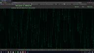
 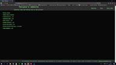
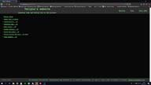
03.01. 06:30
A Petals around the rose játék reszponzívabb lett: már nem lóg ki a
szélén a lista számozása, jobb a betűméret, margók stb...
Ismét az történt, hogy a telefon egy korábbi verziót töltött be (Chrome böngésző), és nem tudtam tesztelni,
hogy
ott is működnek-e a változtatások. Ezt inkognitó módba kapcsolással
sikerült orvosolni.
Próbáltam váltani Atom-ról Visual Studio Code-ra, mert elterjedtebb. Nos ez egyelőre nem fog megtörténni,
mert a
shortcut commandok nem azt csinálják ami a menüben szerepel,
de majd még kitapasztalom hogy van ez. Amúgy nem tűnik rossznak, vannak benne hasznos dolgok amik az
Atom-ból
hiányoznak.
02.15. 17:21
Tegnapelőtt megbetegedtem, de ma már azért tudtam foglalkozni
valamennyit az oldallal. Megcsináltam pár apróságot,
amit már terveztem egy ideje:
- A header és footer stílus elemeit külön stíluslapra vittem át. Egyszer már megszívtam vele amikor
változtattam
rajta.
Minden oldalon külön kellett átírni a kódot és az egyiket kis is felejtettem, amit csak pár nap múlva vettem
észre.
- A stíluslapokat és képeket külön mappába tettem és átírtam az összes linket, ami ezekre hivatkozott.
Remélem
nem
hagytam ki egyet sem.
A képeknek eddig is külön mappa volt, csak pár kivétel akadt.
- Felkerült a teszt laborba még egy apró kreálmány amit a loop tanulásának kapcsán készítettem. Ez is angol,
szerintem marad is így, hacsak egyszer nem lesz kedvem mindet
egyszerre magyarra fordítani.
- A "Titokzatos új project" menüpontot levettem, mert szerintem ebből már nem lesz semmi. :/
02.10. 16:00
Ismét az előző napról blogolok, mert tegnap nem volt kedvem
hozzá... Szóval elkészült a rejtvény jellegű játék, amit említettem az előző postban.
A neve Petals Around the Rose, ez is megtalálható a Teszt
laborban. Magát a játékot nem volt olyan nehéz
kódolni, mint ahogy elképzeltem, de akadtak más problémák, amiket nem sikerült megoldanom. Így se lett
rossz, de
később majd még javítok rajta.
02.07. 03:33
Tegnap (még éjfél előttől számolva :D ) felkerült a Teszt laborba
egy Fairy Tail Quiz, amit egy
Treehouse-os code challenge
keretében készítettem. Eleinte kételkedtem, hogy egyáltalán össze tudom-e rakni. Elég nagy falatnak tűnt, de
belevágtam és szép sorban sikerült megcsinálni minden elemét.
Nagyon élveztem és bár tudom, hogy nem sokan olvassák a blogot, közülük még kevesebben nézik az animét
amiről a
kvíz szól azért kiraktam. Aki nem nézi az animét az fordulhat a
Google-höz.
Elkezdek készíteni egy játékot az oldalra, valószínűleg ezt is csak a Teszt Laborba rakom fel egyelőre. Egy
rejtvény jellegű dolog lesz, de sokat nem akarok elárulni róla.
Nem vagyok benne biztos, hogy a jelenlegi tudásom elegendő lesz-e ehhez a projekthez, de belekezdek és
meglátom
mire jutok vele.
Még valami, amiről nincs kedvem folyton blogolni: rendszeresen végzek apró módosításokat az oldalon. Főleg
azért
mert nem veszek észre mindent és ismerősök jelzik, ha valami nem működik
úgy, ahogy kellene. Ilyen apróságokkal nem szeretném telespamelni a blogot, ha lehet ezt így mondani.
Pro tipp - Ha csinálsz valamit, mindig nézesd át mással is, lehet, hogy észrevesznek olyasmit ami felett te
elsiklasz!
02.05. 07:32
Felkerült pár újdonság a Teszt laborba, ezek mind olyasmik amiket
Treehouse-on gyakorolgatok. Csak apróságok
Javascript-tel: string-ek
összevonása, random számok generálása, length property, conditional statement alapok. Egyelőre van angol
és
magyar nyelvű is, majd később valahogy talán rendszerezem őket.
Még nem döntöttem el... pl a weboldal címe is angol maradt, mert szerintem nagyon hülyén hangzott
magyarul. Jó
lenne valahogy közös nevezőre jutni, de a blogot nem akarom angolul írni,
a többit meg nem akarom teljes mértékben magyarra fordítani.
02.01. 17:48
Megpróbáltam megvalósítani a Smoke Text-es ötletemet, de jelenleg
ez meghaladja a tudásom, szóval későbbre halasztom. Van még egy-két
hasonló ötletem amiket egyelőre nem tudok kivitelezni. Plusz legutóbb amikor minden oldalra megcsináltam
a fix
headert és footert eléggé szétcsúszott az oldal telefonon, ezt nagyjából
sikerült rendbehozni. Nem tökéletes, de nekem egyelőre így is megfelel.
Ez még valamikor a hét elején volt, csak nem volt kedvem blogolni róla. Mostanában eléggé elhanyagoltam
a
kódolást, ezért arra
gondoltam, hogy vinni kéne bele valami rendszerességet. Egyelőre arra jutottam, hogy hétköznap 1-1,
hétvégén
pedig
3 óra ráfordítással még marad mellette is elég szabadidőm. Eredetileg
több időt szerettem volna kitűzni kódolásra, de tudom, hogy nagyon lusta vagyok és egyelőre úgyse menne
a napi 2
óra. Ezen kívül vissza kéne térni a napi egy blog posthoz, gyakran ehhez
sincs kedvem, pedig jó dolog.
Novemberben kezdtem el ezt az egészet, de mivel januárban elég keveset voltam aktív mondhatni 2 hónapom
van
benne
ténylegesen. Jó lenne 2019 végén úgy tekinthetnék vissza erre az oldalra,
hogy lássam hogy sokat fejlődtem, ehhez viszont nem szabadna ennyi ideig elhanyagolni, mint ahogy most
tettem.
Szóval valami ilyesmi lenne a cél az idei év végéig.
Hogy haladok a tanulással? Nos, a HTML-el és a CSS-el szerintem így is túl sok időt vesztegettem.
Ezekből már
eleget tudok ahhoz hogy most ne érdekeljenek egy ideig. Igaz, hogy még
ezekről is lenne mit tanulnom, de most már ideje lenne belevágni a Javascript-be. A héten elkezdtem újra
átnézegetni mindazt amit eddig tanultam róla
Treehouse-on, mert annyi ideig nem
foglalkoztam vele, hogy kb minden kiesett. Szóval mostantól Javascript van fókuszban és elméletileg a
Teszt
Laborba fel is kerülnek majd azok a "mini-projektek" amiket csinálok vele.
01.16. 08:23
Tegnap végre tudtam haladni az oldallal. Rájöttem, hogy ha korán
felkelek még meló előtt, akkor sokkal több kedvem van az egészhez,
mint munka után fáradtan. :) A blog post megírásához sajna már nem volt kedvem, szóval ezt ma pótolom.
Szóval...
tegnap az jutott eszembe, hogy ha a főoldalról a fix headert és a footert
átrakom a többi lapra is akkor sokkal átláthatóbb lesz a menü, úgyhogy ezt megvalósítottam. Végre él a
Teszt
labor
menüpont is, egyelőre a téli témát raktam rá, ami korábban az oldal háttere
volt, plusz felkerült egy "Smoke Text On Hover" lap is. Ez nem saját alkotás, csak másoltam egy
tutorial-ból, de
majd ha lesz kedvem hozzá csinálok vele valami egyedibbet.
Arra gondoltam, hogy megfordítom az animációt és egy valamivel nagyobb szöveget hover-rel fel lehetne
fedni,
mintha zseblámpa lenne az egér vagy ilyesmi.
01.11. 08:25
Elég régen volt blog post, aminek sok oka van: pihizni akartam év
végén, lusta voltam / nem volt kedvem kódolással foglalkozni,
vagy foglalkoztam vele csak nem akartam blogolni. Most, hogy végre megint van blog post, pár szó az
oldalon
történt változásokról:
- Végre elkészült a főoldal menüvel, Matrix-os háttérrel meg minden. Még nem az igazi, de kezdetnek
megteszi.
Egyelőre egyik lap sincs normálisan beállítva kisebb kijelzőkhöz,
szóval telefonon katasztrófa az egész, de úgy tervezem, hogy ezt hétvégén elintézem.
- A blog minden évben egy új lapot kap, ide is lett egy kis menü és egy kényelmes kis link, ami rögtön a
legújabb
posthoz repíti az ide látogatókat.
(Elképesztő, hogy egy átmelózott éjszaka után még képes vagyok így fogalmazni ^^ )
- A "Titokzatos új projekt" egyelőre stagnál. Önhibámon kívül... a barimra várok akié az oldal lesz.
Ahogy
ismerem
ebből nem mostanában lesz valami szóval létrehoztam még egy linket ami a
"Teszt labor" nevet kapta. Kódolást csak úgy tud tanulni az ember, ha gyakorolja is, ezért arra
gondoltam, hogy
amit egy oktatóvideón megtanulok azt azonnal ki is próbálom és ezeket a spontán
próbálkozásokat ide feltöltöm. A link egyelőre nem mutat sehova, de hamarosan meglesz ez is.